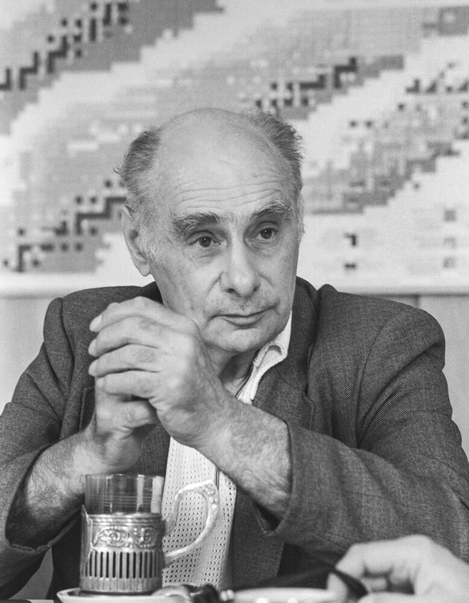

Георгий Николаевич Флеров – физик-ядерщик, ученик и соратник И.В. Курчатова, внес личный вклад
в
реализацию советского атомного проекта.
Вклад в ядерное оружие:
В начале войны Флеров ушел в ополчение, но продолжил заниматься физикой. В 1942
году Курчатов пригласил его
в Лабораторию № 2. Вспоминая войну, Флеров рассказывал, что угроза немецкого летчика о новом
страшном оружии
встревожила его по-своему. Находясь в Воронеже, Флеров изучал иностранные физические журналы и
обнаружил
полное отсутствие публикаций по ядерной физике. Это навело его на мысль, что ядерные исследования
засекречены не только в Германии, но и в США и Англии.
Стало понятно о наличии секретных разработкок атомного оружия на Западе. Флеров поделился своими
опасениями с академиком Иоффе и попросил организовать семинар в Йошкар-Оле, но не смог убедить
ученых в
необходимости создания атомной бомбы.
В феврале
1942
г. Флеров вновь обратился к Курчатову: "Пишу
откровенно о цели своего приезда сюда (в Казань)
потому, что считаю, что все-таки могу и должен заниматься физикой, причем физикой не вообще в ее
оборонных
применениях, а мне и нам всем необходимо продолжать работу над ураном…" .
После работы над атомным проектом Флеров получил звание Героя Социалистического Труда и
Сталинскую премию. В
1950-е
годы он занялся ядерно-физическими методами разведки нефти и синтезом новых
элементов. В 1957
году
Курчатов поручил Флерову возглавить лабораторию ядерных реакций в Дубне, где под его
руководством были
синтезированы трансурановые элементы с номерами 102-107. В 2012
году 114-й элемент
был назван флеровием в
его честь.
Ученый был удостоен золотых медалей имени Д.И. Менделеева и имени И.В. Курчатова за свои исследования. Г.Н. Флеров являлся почетным членом Датской королевской академии наук и Германской академии естествоиспытателей "Леопольдина".